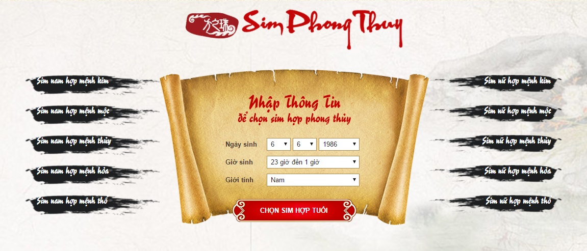

Sim Phong THủy
Sim Phong Thủy Hợp Tuổi
Chọn sim số đẹp phong Thủy tuổi cho bạn vận khí tốt đang là một trong những xu hướng mà người chơi phong thủy rất quan tâm. Sim điện thoại không chỉ là phương tiện để liên lạc với mọi người mà nó còn ẩn những huyền diệu theo thuật phong thủy lý số của phương Đông. Vậy thế nào là sim số đẹp, tại sao mọi người làm tìm đến những sim số đẹp? Cùng SimSoDep.Com tìm hiểu vấn đề này qua bài viết dưới đây nhé.
- Sim số đẹp tại sao lại được nhiều người tìm kiếm?
Trong cuộc sống hiện đại ngày nay chiếc điện thoại đã ngày càng trở nên gắn bó và thân thiết với mỗi chúng ta hơn, là công cụ kết nối với thế giới xung quanh, kết nối với bạn bè người thân đối tác kinh doanh, đồng nghiệp. Số sim điện thoại của mỗi người giờ đây cũng đóng vai trò như cái tên của mỗi chúng ta, nó đại diện cho chủ nhân của chiếc điện thoại vậy, với tầm quan trọng của nó như vậy nên ai cũng mong muốn mình sở hữu một sim số đẹp.
- Quan niệm về sim số đẹp
- Mọi người vẫn thường nghe nhắc đến các từ như sim tam hoa, sim tứ quý, sim ngũ quý và nhiều loại sim số khác… chúng thường có giá trị lên đến cả chục triệu hay đặc biệt hơn đến cả trăm triệu. Còn bình thường hơn thì mọi người hay sử dụng đến các số thần tài 39, 79, rồi số lộc phát (68), phát lộc (86) hay nhất lộc phát (168) có giá từ vài trăm cho đến vài triệu. Vậy các số sim trên có thực sự đẹp cho người dùng, đấy là điều khó xác định, nhưng để sở hữu những số như vậy thì không phải ai cũng dễ dàng sở hữu được. Có những người mua được những số sim đẹp trên thì thấy mọi người cũng nể trọng mình hơn, làm ăn giao dịch cũngg may mắn hơn, nhưng cũng có nhiều người lại thấy mình không thay đổi gì cả, lại có cả những người từ khi sử dụng các sim đẹp trên lại còn thấy vận khí của mình xấu đi.
- Sim thong thủy là gì
- Khái niệm phong thủy chắc không còn xa lạ với nhiều người nữa, tính ứng dụng và hữu ích của nó trong cuộc sống đã ngày càng được minh chứng rõ nét, như ứng dụng phong thủy trong nhà cửa kiến trúc, trong kinh doanh.
- Vạn vật tồn tại và phát triển đều bị tác động ảnh hưởng bởi quy luật âm dương và ngũ hành. Giữa chiếc điện thoại và bạn cũng vậy, bạn tác động vào nó và nó cũng tác động ngược lại, đôi khi ta chỉ nhìn thấy những tác động về mặt cơ học vật chất, còn tác động về những mặt khác thì ta không nhìn thấy được. Bạn sử dụng điện thoại càng nhiều thì sự tương tác của điện thoại lên bạn cũng tăng lên, ta có thể gọi nó là hệ số ảnh hưởng như trong toán học vậy.
- Mỗi một con số đều tồn tại tính ngũ hành, một dãy số cũng tồn tại tính ngũ hành đại diện của dãy, một số sim cũng vậy, đều có tính ngũ hành riêng của nó, nếu bạn có một ít kiến thức về phong thủy học thì bạn cũng có thể dễ dàng tự xác định được tính ngũ hành của số sim điện thoại.
- Sim phong thủy như thế nào được gọi là đẹp?
Những sim điện thoại mà có tính ngũ hành hợp tương sinh cho ngũ hành bản mệnh, hay bổ trợ cho hành khuyết hay tương sinh cho ngũ hành suy, chế hóa ngũ hành vượng trong tứ trụ được coi là sim phong thủy hợp tuổi.
✔ Chọn sim số đẹp phong thủy hợp tuổi cho bạn vận khí tốt được SimSoDep.Com gợi ý trên đây hẳn đã cho các bạn đọc có thêm thông tin về việc lựa chọn những sim số điện thoại sẽ theo bạn suốt thời gian dài rồi phải không? Sim điện thoại được ví như cái tên thứ 2 của bạn, do đó, hãy tham khảo bài viết trên đây để lựa ra sim điện thoại ưng ý và có lợi cho vận khí của bạn nhé.